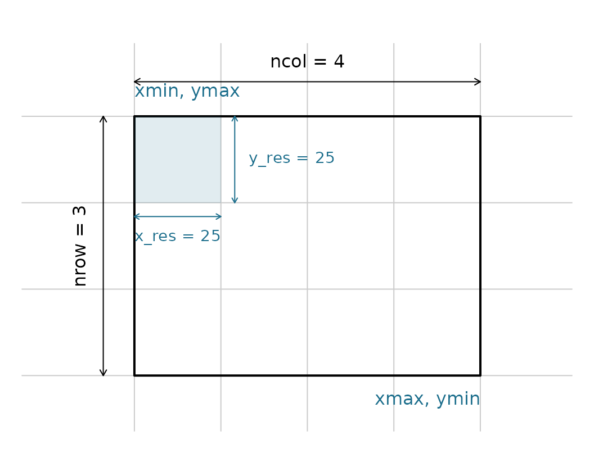
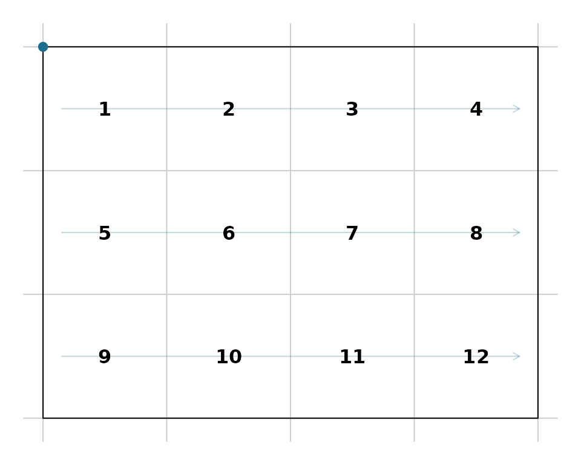

What is vaster?
The vaster package provides pure raster grid logic without requiring actual raster data. It separates the abstract mathematical operations of raster grids - dimension, extent, cell indexing, coordinate transformations - from data formats and file I/O.
This is useful when you need to:
- Pre-compute grid operations before reading or writing data
- Work with virtual grids and mosaics
- Perform format-agnostic grid calculations
- Build higher-level geospatial tools
The Virtual Grid Model
A raster grid in vaster is defined by just two components:
-
Dimension: the number of columns and rows
c(ncol, nrow) -
Extent: the bounding box
c(xmin, xmax, ymin, ymax)
From these two pieces of information, all grid properties can be derived:
Every other property is read off these two vectors: the extent fixes the outer edges and the corners, while the dimension divides that range into cells.
dm <- c(4L, 3L); ex <- c(0, 100, 0, 75)
op <- par(mar = c(1, 1, 2, 1))
plot(NA, xlim = c(-20, 114), ylim = c(-12, 92), asp = 1, axes = FALSE, xlab = "", ylab = "")
abline(v = x_corner(dm, ex), h = y_corner(dm, ex), col = "grey80")
rect(ex[1], ex[3], ex[2], ex[4], lwd = 2)
text(ex[1], ex[4] + 7, "xmin, ymax", adj = 0, col = "#1C6E8C")
text(ex[2], ex[3] - 7, "xmax, ymin", adj = 1, col = "#1C6E8C")
arrows(0, 85, 100, 85, code = 3, length = 0.06); text(50, 91, "ncol = 4")
arrows(-9, 75, -9, 0, code = 3, length = 0.06); text(-16, 37.5, "nrow = 3", srt = 90)
## one cell carries the resolution
rect(0, 50, 25, 75, col = "#1C6E8C22", border = NA)
arrows(0, 46, 25, 46, code = 3, length = 0.05, col = "#1C6E8C")
text(12.5, 40, "x_res = 25", col = "#1C6E8C", cex = 0.9)
arrows(29, 50, 29, 75, code = 3, length = 0.05, col = "#1C6E8C")
text(33, 62.5, "y_res = 25", col = "#1C6E8C", cex = 0.9, adj = 0)
par(op)There is no data, no file format, no CRS - just the logical grid structure. This matches how GDAL and other tools internally represent grids.
Cell Numbering Convention
Cells are numbered from 1, starting at the top-left
corner and proceeding row-wise (left-to-right,
top-to-bottom). This matches the convention used by the
raster and terra packages.
## cell numbers for a 4x3 grid
dimension <- c(4, 3)
extent <- c(0, 4, 0, 3)
## total cells
n_cell(dimension)
#> [1] 12
## cell 1 is top-left
xy_from_cell(dimension, extent, 1)
#> [,1] [,2]
#> [1,] 0.5 2.5
## cell 4 is top-right
xy_from_cell(dimension, extent, 4)
#> [,1] [,2]
#> [1,] 3.5 2.5
## cell 12 is bottom-right
xy_from_cell(dimension, extent, 12)
#> [,1] [,2]
#> [1,] 3.5 0.5The cell centre coordinates reflect this ordering:
## all cell centres
cells <- seq_len(n_cell(dimension))
xy_from_cell(dimension, extent, cells)
#> [,1] [,2]
#> [1,] 0.5 2.5
#> [2,] 1.5 2.5
#> [3,] 2.5 2.5
#> [4,] 3.5 2.5
#> [5,] 0.5 1.5
#> [6,] 1.5 1.5
#> [7,] 2.5 1.5
#> [8,] 3.5 1.5
#> [9,] 0.5 0.5
#> [10,] 1.5 0.5
#> [11,] 2.5 0.5
#> [12,] 3.5 0.5The arrows trace the numbering: cell 1 is at the top-left origin, counting along each row before dropping to the next.
dm <- c(4L, 3L); ex <- c(0, 4, 0, 3)
cn <- seq_len(n_cell(dm)); ctr <- xy_from_cell(dm, ex, cn)
op <- par(mar = c(1, 1, 1, 1))
plot(NA, xlim = c(0, 4), ylim = c(0, 3), asp = 1, axes = FALSE, xlab = "", ylab = "")
abline(v = x_corner(dm, ex), h = y_corner(dm, ex), col = "grey80")
rect(ex[1], ex[3], ex[2], ex[4])
for (r in 1:3) {
y <- unique(ctr[row_from_cell(dm, cn) == r, 2])
arrows(0.15, y, 3.85, y, length = 0.06, col = "#1C6E8C44")
}
text(ctr[, 1], ctr[, 2], cn, font = 2)
points(0, 3, pch = 19, col = "#1C6E8C")
par(op)Resolution and Origin
Resolution is the cell size in x and y directions:
dimension <- c(10, 5)
extent <- c(0, 100, 0, 50)
x_res(dimension, extent)
#> [1] 10
y_res(dimension, extent)
#> [1] 10The origin is the point where cell boundaries align. By default, vaster uses the bottom-left corner of the extent:
origin(dimension, extent)
#> [1] 0 0Understanding the origin is important for aligning multiple grids -
covered in detail in vignette("extent-alignment").
Extent Properties
Extract individual extent components, dimension is obviously irrelevant for extent components but is included for consistency with other functions.
Coordinate Arrays
Generate coordinate vectors for all columns or rows:
dimension <- c(4, 3)
extent <- c(0, 4, 0, 3)
## x coordinates of cell centres (one per column)
x_centre(dimension, extent)
#> [1] 0.5 1.5 2.5 3.5
## y coordinates of cell centres (one per row)
y_centre(dimension, extent)
#> [1] 0.5 1.5 2.5
## x coordinates of cell corners/edges (ncol + 1 values)
x_corner(dimension, extent)
#> [1] 0 1 2 3 4
## y coordinates of cell corners/edges (nrow + 1 values)
y_corner(dimension, extent)
#> [1] 0 1 2 3For a full matrix of all cell centre coordinates:
xy(dimension, extent)
#> x y
#> [1,] 0.5 2.5
#> [2,] 1.5 2.5
#> [3,] 2.5 2.5
#> [4,] 3.5 2.5
#> [5,] 0.5 1.5
#> [6,] 1.5 1.5
#> [7,] 2.5 1.5
#> [8,] 3.5 1.5
#> [9,] 0.5 0.5
#> [10,] 1.5 0.5
#> [11,] 2.5 0.5
#> [12,] 3.5 0.5Comparison with raster/terra
The vaster approach differs from raster and
terra in that there is no object to create or manage. Grid
operations are pure functions:
## terra approach
library(terra)
r <- rast(ncol = 10, nrow = 5, xmin = 0, xmax = 100, ymin = 0, ymax = 50)
res(r)
ncell(r)
xyFromCell(r, 1)
## vaster approach
dimension <- c(10, 5)
extent <- c(0, 100, 0, 50)
c(x_res(dimension, extent), y_res(dimension, extent))
n_cell(dimension)
xy_from_cell(dimension, extent, 1)This functional approach is useful when you need to perform many grid calculations without the overhead of object creation, or when working in contexts where raster packages aren’t available.
Next Steps
-
vignette("cell-operations"): Converting between cells, coordinates, and row/col indices -
vignette("extent-alignment"): Aligning and cropping extents to grids -
vignette("gdal-interop"): Working with GDAL geotransforms and RasterIO